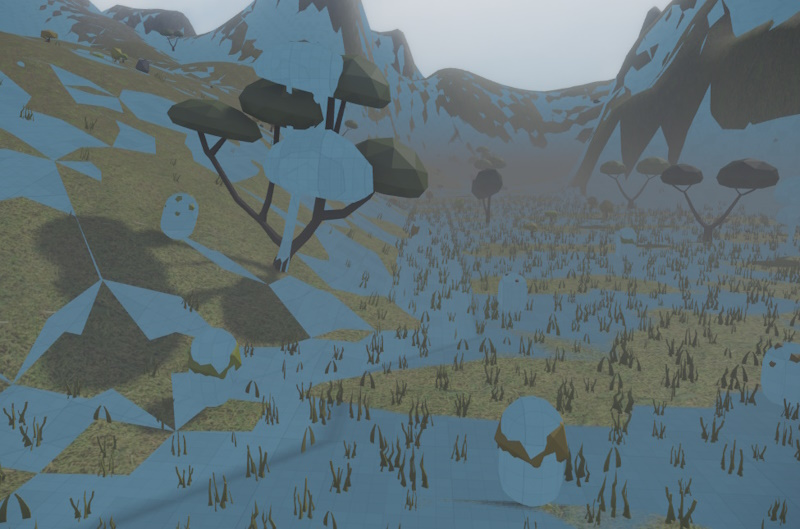
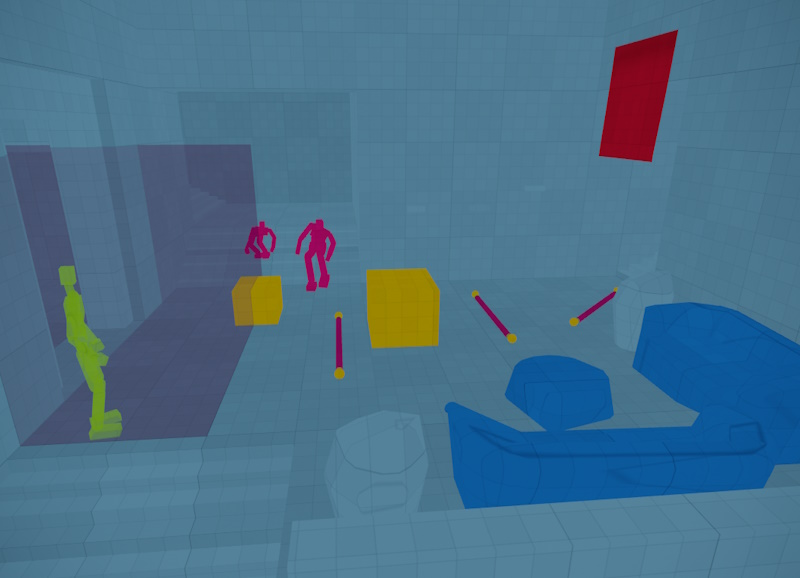
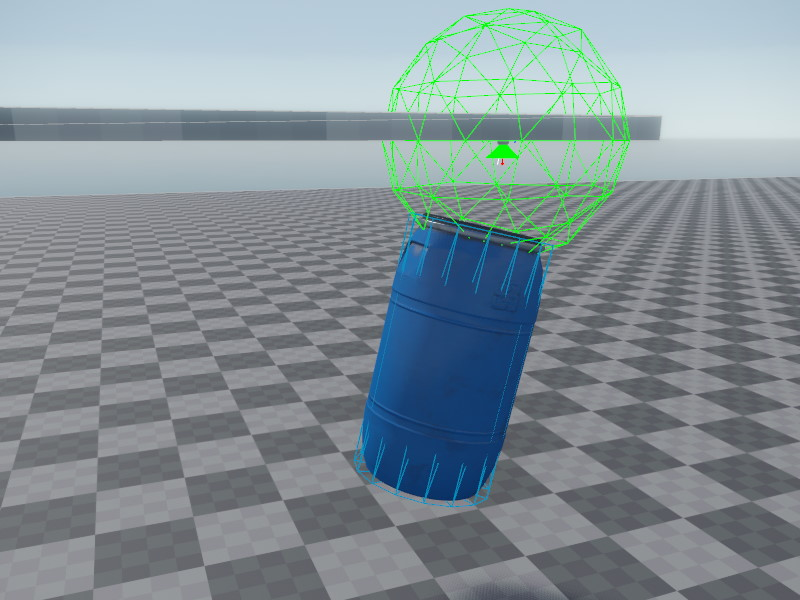

Jolt Debug Visualizations
To debug physics issues it can be very valuable to visualize certain aspects of the Jolt simulation. Debug visualizations are enabled through CVars.

Visualize Jolt Geometry
These CVars enable rendering of the Jolt collision geometry:
Jolt.Visualize.Geometry: Enables visualization of physics collision geometry.Jolt.Visualize.Exclusive: Disables rendering of regular geometry.Jolt.Visualize.Distance: Configures the distance up to which Jolt geomtry gets extracted from objects.
The collision geometry is rendered using these color codes:
- light blue = static geometry
- dark blue = kinematic
- yellow = dynamic bodies
- green = query shapes (or hitboxes)
- pink = ragdolls and ropesJolt Rope Component
- red = soft bodies
- transparent = triggers

Debug Draw Constraints
The debug draw CVars enable wireframe overlays which are mainly useful to debug issues with constraints. This visualization has a high performance impact and thus should only be used in very small test scenes.
These debug draw CVars are available:
Jolt.DebugDraw.Bodies: Enables visualization of physics bodies.Jolt.DebugDraw.Constraints: Enables basic visualization of constraints.Jolt.DebugDraw.ConstraintFrames: Enables more detailed visualization of constraints.Jolt.DebugDraw.ConstraintLimits: Enables visualization of constraint limits.
